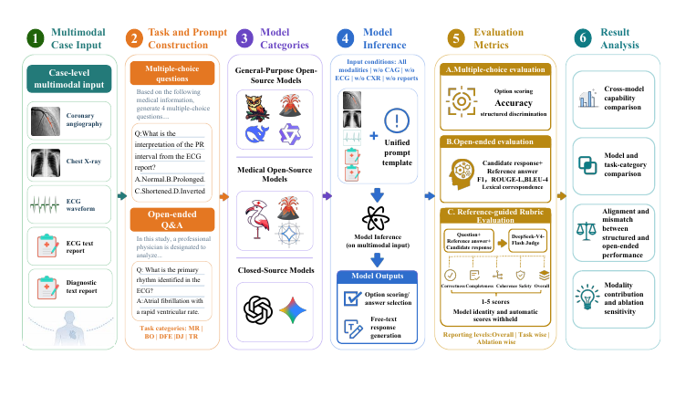
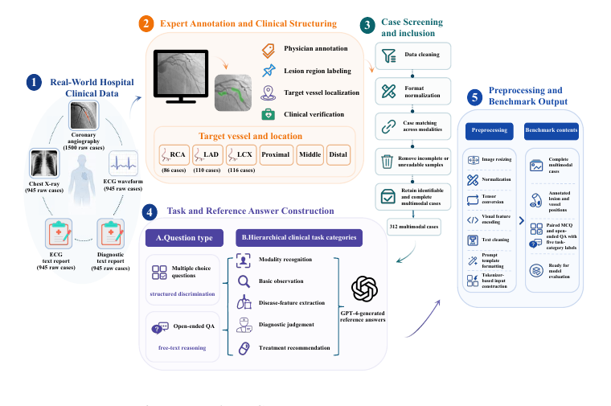

Multimodal medical AI benchmark
ChestPainBench: Evaluating LVLMs for Multimodal Clinical Reasoning in Chest Pain
Clinical data are not publicly distributed

Overview
Chest pain assessment requires joint interpretation of heterogeneous clinical evidence, yet many existing evaluations of large vision-language models rely on unimodal inputs, multiple-choice questions, or isolated visual question answering. ChestPainBench is a case-level benchmark containing 312 chest pain cases with electrocardiogram waveforms, chest radiographs, coronary angiography, ECG reports, and diagnostic reports. It evaluates nine general-purpose, medically specialized, and proprietary LVLMs using both structured multiple-choice questions and open-ended clinical question answering.
Open-ended responses are assessed with lexical metrics and a reference-guided rubric covering correctness, completeness, coherence, safety, and overall quality. Task-level and single-modality ablation analyses examine where clinical reasoning fails and which evidence sources models rely on most heavily.
Benchmark construction
Each case aligns five sources of evidence from the same patient. Cases with missing, unreadable, or inconsistent data were excluded. The remaining cases underwent patient-level matching, image and text preprocessing, clinical annotation, question construction, and model-specific input formatting.

Clinical task hierarchy
| Level | Task | Evaluation focus |
|---|---|---|
| 1 | Modality recognition | Identify the source of the clinical evidence. |
| 2 | Basic observation | Extract explicit findings from the available input. |
| 3 | Disease-feature extraction | Relate findings to pathological characteristics. |
| 4 | Diagnostic judgment | Integrate evidence into a case-level diagnosis. |
| 5 | Treatment recommendation | Formulate an appropriate management response. |
Evaluation protocol
Multiple-choice performance is measured by accuracy. Candidate options are scored using token-level likelihoods when logits are available; otherwise, the model is instructed to return one option for deterministic parsing. Open-ended responses are evaluated with F1, ROUGE-L, BLEU-4, and a reference-guided rubric scored from 1 to 5.
The same case content, modality order, question wording, and required output format are retained across models. Only formatting required by model-specific image placeholders, conversation templates, and inference interfaces is adapted.
Results
Overall model comparison
| Model | Accuracy | F1 | ROUGE-L | BLEU-4 | Judge overall |
|---|---|---|---|---|---|
| DeepSeek-VL2 | 77.96% | 0.313 | 0.272 | 0.192 | 2.996 |
| Qwen3-VL | 97.52% | 0.327 | 0.286 | 0.151 | 4.030 |
| mPLUG-Owl3 | 94.07% | 0.445 | 0.382 | 0.228 | 3.788 |
| MedGemma-4B | 93.37% | 0.446 | 0.403 | 0.217 | 3.875 |
| Gemini-3-Flash | 97.60% | 0.296 | 0.250 | 0.125 | 4.593 |
| GPT-4o | 98.32% | 0.467 | 0.406 | 0.234 | 4.529 |
| Med-Flamingo | 28.69% | 0.064 | 0.055 | 0.192 | 1.081 |
| LLaVA | 19.87% | 0.314 | 0.278 | 0.184 | 2.582 |
| LLaVA-Med | 21.79% | 0.358 | 0.304 | 0.212 | 2.776 |
Key observations
- Structured and open-ended evaluation provide complementary views of model capability.
- Treatment recommendation is the most persistent weakness across model families.
- Lexical similarity and reference-guided clinical quality rank models differently.
- Medical specialization does not provide a consistent advantage.
- Removing textual reports causes substantially greater degradation than removing an individual image or waveform modality.
Modality-ablation summary
| Removed evidence source | Macro-average change |
|---|---|
| Coronary angiography | +0.033 |
| ECG waveform | +0.025 |
| Chest radiograph | -0.003 |
| Textual reports | -1.084 |
Small positive values reflect evaluation variation and should not be interpreted as evidence that removing a modality improves performance.
Ethics and data availability
This study used retrospectively collected, de-identified clinical data and was approved by the institutional ethics committee (Approval No. 2025-K273-01).
Patient-level clinical data, source images, reports, questions, and case-level model outputs are not distributed on this project page because of privacy, ethical, and institutional restrictions.
Citation
Qile Gu, Hongyi Miao, Wenmiao Wang, Zhanyi Yan, Yunfei Zhao, and Shuai He. ChestPainBench: Evaluating LVLMs for Multimodal Clinical Reasoning in Chest Pain. Manuscript, 2026.